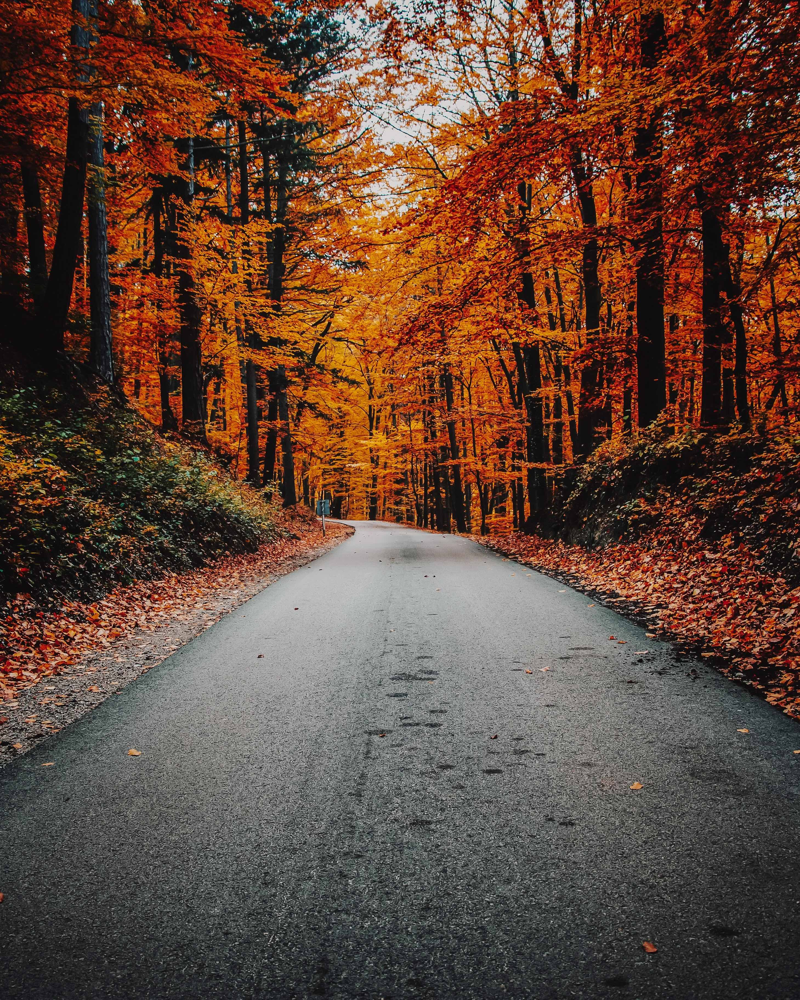

Gigi is learning HTML so I decided to open a w3spaces acount to see how it works! It's very cool.
Isn't Autumn the best season?
Lubię, kiedy kobieta omdlewa w objęciu, Kiedy w lubieżnym zwisa przez ramię przegięciu, Gdy jej oczy zachodzą mgłą, twarz cała blednie, I wargi się wilgotne rozchylą bezwiednie.